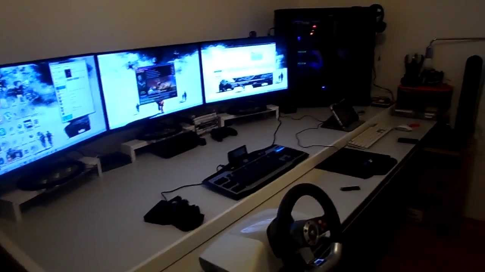
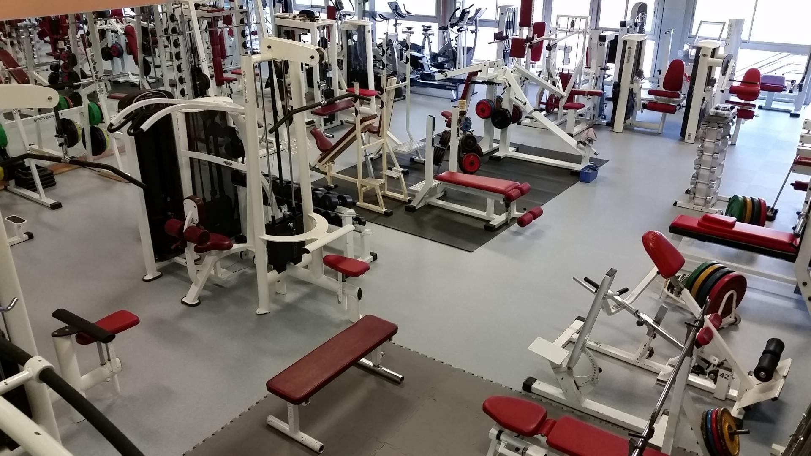
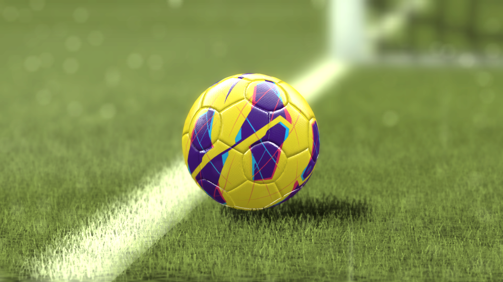
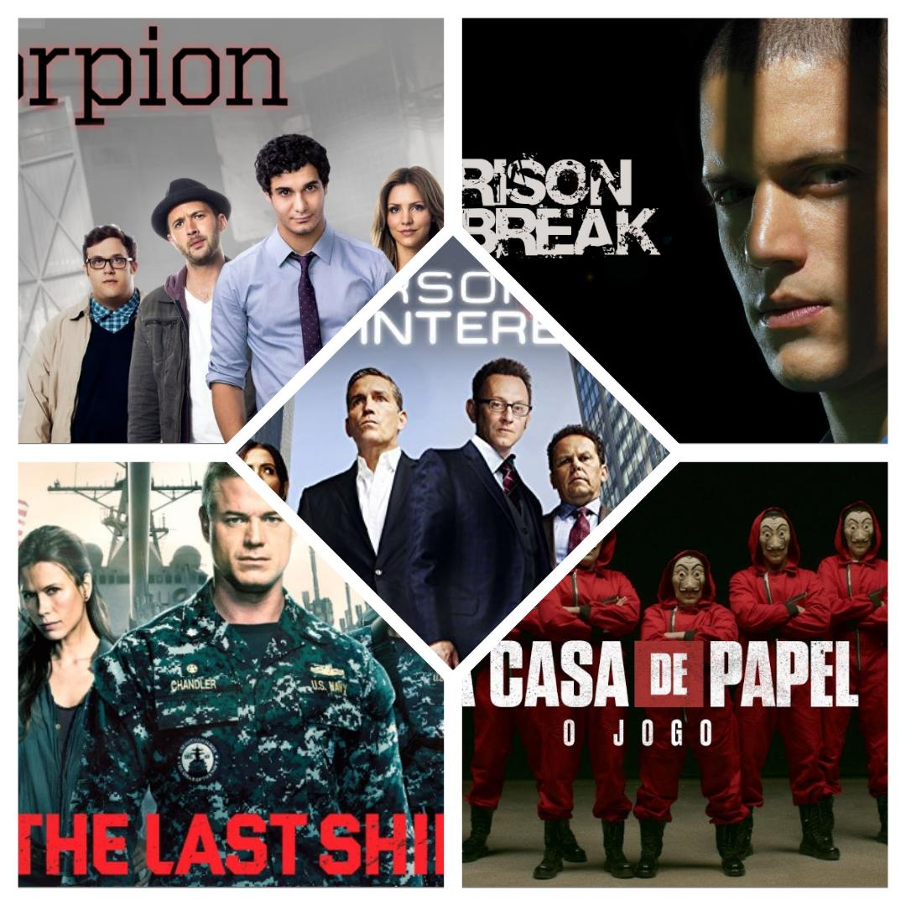

Gamer

Je suis aussi un gamer et j'avoue que je suis aussi fan des jeux videos.
J'aime jouer à des jeux videos depuis que j'étais petit.
Tout en jouant je m'améliore et je requiers de nouvelles connaissances.
Sport

J'aime beaucoup faire du sport quand je suis libre.
Le sport est le premier médicament de la santé.
Je vous le recommande, ne le négligez pas du tout.
Football

Le football est l'un de mes sports préféré
Le football est le sport le plus pratiqué.
Ce dernier est aussi l'élément clé du corps et n'hésitez pas à le pratiquer.
Séries télévisées

J'aime aussi regarder des séries de films télévisés.
Les bonnes séries sont très bénéfiques dont on peut soutirer des leçons de morale.
Je vous recommande aussi de regarder de bonnes séries si vous en avez de temps libre.